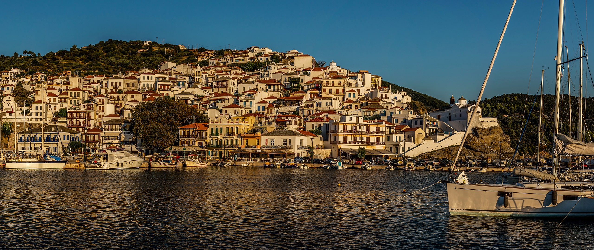
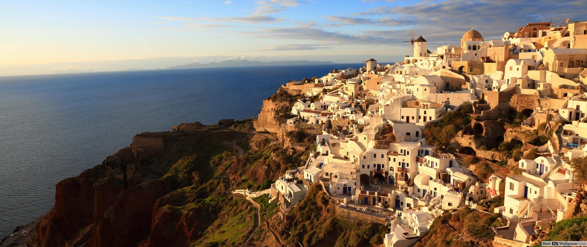

U Grčku iz Novog Sada, samo klik daleko


Zakintos je najjužnije i treće po veličini jonsko ostrvo, poznato po dugim peščanim plažama, kristalnom moru tirkizne boje, blagoj mediteranskoj klimi, kornjačama, vinogradima, maslinama, bogatom istorijskom i kulturnom nasledju. Nalazi se na samo 8,5 nm južno od Kefalonije, i na 9,5 nm od Peloponeza. Zbog svoje geografske pozicije do Zakintosa se lako stiže kako sa drugih Jonskih ostrva tako i sa kopnenog dela grčke.
Priroda je Zakintosu podarila idilične pejsaže na severu, istoku i jugu ostrva, a na zapadnoj strani veliki broj morskih pećina, krševitih uvala, strmih litica duz obale. Najpoznatija plaža na ostrvu je Navagio sa finim belim peskom, tirkiznim morem i poznatom olupinom broda, koja je i zaštitni znak Zakintosa.
Ubedljivo najbolja vila u kojoj sam bio. Vredi za sve pare. Uvek se razocaram kada odem na neko drugo mesto na letovanje i udjem u neku drugu vilu. To se ne moze porediti. Nadam se da cu uskoro ponovo posetiti Kalitheu i vilu Venetia! Sve pohvale i samo tako nastavite vidimo se i sledece godine. Boris iz Zrenjanina!!!

Nezaboravno letovanje. Rodos će verovatno još dugo, dugo da nam bude merilo lepote u odnosu na sva naredna letovanja. Go2Travel - fenomenalno organizovan. Udoban(dvokrevetni) apartman, klima, komarnik, ciscenje svaki dan, zamena posteljine i peskira svaki treci dan, prekrasna plaza, besplatne lezaljke pored bazena i na plazi, dobar Wi Fi, mirno. Pravo mesto za odmor. Hvala svima!